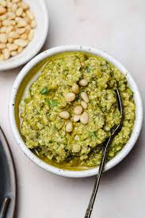

Tapenade

Description
Olive tapenade is a rich, savory spread made from black olives, capers, garlic, lemon juice, and olive oil, blended into a chunky or smooth consistency. Anchovies and thyme enhance its depth of flavor. This Mediterranean classic is perfect as a dip for bread, a topping for grilled meats, or a flavorful pasta addition. Quick to prepare in under 10 minutes, it offers a balance of briny, tangy, and umami notes. Store it in the fridge for up to a week for an easy, gourmet condiment. Variations include green olives, added nuts, or spicy chili flakes for an extra kick.
Ingredients
- 1 cup (150g) black olives (Kalamata or Niçoise), pitted
- 1 clove garlic, minced
- 2 tbsp capers, drained
- 3 tbsp extra virgin olive oil
- 2 tsp lemon juice (freshly squeezed)
- 3-4 anchovy fillets (optional, but traditional)
- 1 tsp fresh thyme leaves (or ½ tsp dried thyme)
- ¼ tsp black pepper
Instructions
- Blend the ingredients: Add the olives, garlic, capers, lemon juice, anchovies (if using), thyme, and black pepper to a food processor. Pulse a few times.
- Drizzle in olive oil: With the food processor running, slowly add the olive oil until the mixture reaches your desired consistency. (Some prefer it chunky, others smoother.)
- Taste and adjust: Add more lemon juice, olive oil, or seasoning if needed.
- Serve: Enjoy immediately with crusty bread, crackers, or as a condiment. Store in an airtight container in the fridge for up to a week.
Home